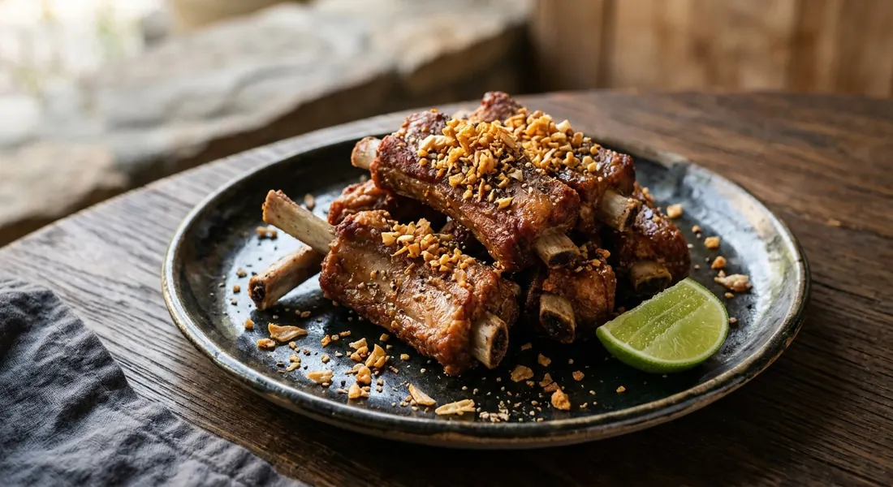

Thai fried pork spare ribs with garlic and pepper — tender marinated ribs deep-fried until golden and aromatic, topped with crispy fried garlic.

ซี่โครงหมูทอด
Aromatic fried pork ribs marinated in the classic Thai combination of garlic, coriander root and white pepper — deep-fried until golden and topped with crispy fried garlic. A beloved drinking snack and rice dish across Thailand.
This is Thai comfort food at its most satisfying: meaty ribs that are tender inside and crispy outside, perfumed with the holy trinity of Thai aromatics and finished with that essential sprinkle of golden fried garlic that adds both crunch and intensified garlic flavour.
The dish represents Thai cooking's mastery of layered flavours and textures. The initial marinade penetrates deep into the meat, while the high-heat frying creates textural contrast. The final garnish of fried garlic adds another aromatic dimension — this isn't just seasoning, it's flavour architecture.
| Thai | English | Amount |
|---|---|---|
| ซี่โครงหมู | Pork spare ribs, cut into bite-size pieces | 800g |
| เบกกิ้งโซดา | Baking soda, for tenderizing | 1/2 tsp |
| Thai | English | Amount |
|---|---|---|
| รากผักชี | Coriander root | 6 stalks |
| กระเทียม | Garlic | 8 cloves |
| พริกไทยเม็ด | White peppercorns | 1 tsp |
| น้ำปลา | Fish sauce | 2 tbsp |
| น้ำมันหอย | Oyster sauce | 2 tbsp |
| ซีอิ๊วขาว | Light soy sauce | 1 tbsp |
| น้ำตาลทราย | Sugar | 1 tbsp |
| ซอสปรุงรส | Seasoning sauce | 1/2 tbsp |
| นมสด | Fresh milk, optional, for extra tenderness | 4 tbsp |
| Thai | English | Amount |
|---|---|---|
| แป้งมัน | Tapioca starch, optional, for crispy coating | 2 tbsp |
| น้ำมันทอด | Vegetable oil | for deep frying |
| Thai | English | Amount |
|---|---|---|
| กระเทียมกลีบเล็ก | Small garlic cloves, for fried garlic topping | 6 cloves |
| ผักชี | Fresh coriander | for garnish |
Tenderizing matters with spare ribs, which can be tough if not properly prepared. Baking soda breaks down proteins, while milk acts as a natural tenderizer. Some cooks use both, others prefer one method. The key is adequate marinating time — overnight is ideal for maximum flavour penetration.
The 'three friends' paste (สามเกลอ) — coriander root, garlic, and white peppercorns — forms the aromatic foundation. Fresh coriander root has an intensely herbal, almost medicinal fragrance that's irreplaceable. White pepper provides heat without the colour that would darken the marinade.
Par-cooking prevents disaster. Raw-marinated ribs often burn before cooking through. Many Thai cooks solve this by partially cooking the marinated ribs first — either dry-searing until the surface tightens, then adding liquid to braise briefly, or simmering in their own juices until tender. The final deep-fry then creates the crispy exterior.
The fried garlic topping isn't optional — it's integral. The crispy, golden cloves provide textural contrast and concentrated garlic flavour that complements rather than competes with the marinated meat. Some cooks leave the skins on for extra flavour and colour.
Street vendor versions often simplify the marinade to just fish sauce and seasoning powder, relying on technique rather than complex flavouring. Restaurant versions might include oyster sauce for richness and complexity.
Milk-marinated variants submerge the ribs in fresh milk for hours before adding other seasonings — a technique that produces exceptionally tender results. Northern Thai influences might add extra white pepper or include curry powder for warmth.
Modern adaptations sometimes use cooking wine instead of milk, or add baking powder to the coating for extra puffiness. Traditional approaches favour the clean flavours of the three-friends paste without additional complications.
Choose ribs with good meat coverage — the middle section of the rack typically offers the best meat-to-bone ratio. Avoid ribs that are too fatty (the fat won't render properly in quick frying) or too lean (they'll dry out).
Soft-bone ribs (กระดูกอ่อน) — the cartilaginous ends of the rib rack — are preferred by many Thai cooks because they cook faster and are naturally more tender. Regular spare ribs work well but require more careful timing.
Proper sizing is crucial. Pieces should be bite-sized but substantial enough to remain juicy. Too small and they dry out; too large and they don't cook evenly.
Advance preparation helps. The ribs improve with overnight marination, and the par-cooking can be done hours ahead. Only the final frying needs to happen at serving time.
Serve immediately while the coating is crispy and the fried garlic retains its crunch. Like most deep-fried foods, these lose their textural appeal as they cool and steam softens the crispy elements.
Traditional accompaniments include sticky rice (particularly in Isaan-style service), fresh cucumber for cooling contrast, and additional dipping sauces like fish sauce with chillies or sweet chilli sauce.
The appeal of si khrong moo tod lies in its perfect balance of preparation and technique — the patient marination rewarded by the quick, dramatic transformation of deep-frying, creating something that's both rustic comfort food and sophisticated flavour layering.
This recipe is translated from the following Thai-language sources. Where they disagree, we've said so.
1. Aroifin — https://aroifin.com
2. Cookpad Thailand (Chef Turbo) — https://cookpad.com/th
3. Kapook.com (Guyama/Dekcooking) — https://news.kapook.com
4. Krua.co — https://krua.co
5. Pantip.com community — https://pantip.com
6. Wongnai Recipes — https://www.wongnai.com/recipes